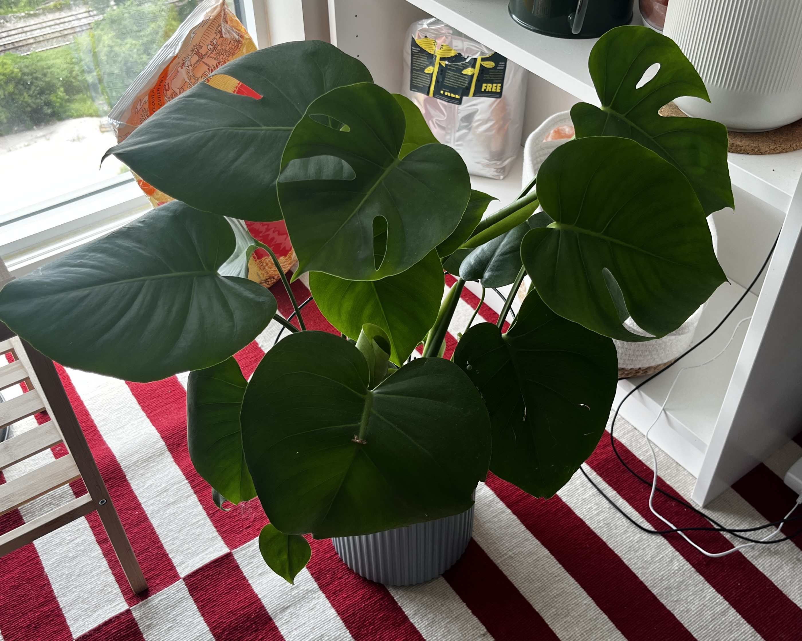

The Joy of House Plants
House plants are more than just decorative elements; they bring life, color, and a sense of calm to any space. Whether you’re a seasoned plant parent or a beginner, incorporating greenery into your home can have a profound impact on your well-being. From improving air quality to boosting your mood, house plants are a simple yet powerful way to enhance your living environment.
House plants are more than just decorative elements; they bring life, color, and a sense of calm to any space. Whether you’re a seasoned plant parent or a beginner, incorporating greenery into your home can have a profound impact on your well-being. From improving air quality to boosting your mood, house plants are a simple yet powerful way to enhance your living environment.
:max_bytes(150000):strip_icc()/SPR-lemon-meringue-pothos-care-guide-7971773-hero-d979d0acd8f74180bb46c8edda7df2ff.jpg)
Caring for house plants can also be a therapeutic activity. The process of watering, pruning, and repotting plants can help reduce stress and promote mindfulness. Additionally, watching your plants grow and thrive can be incredibly rewarding. If you’re new to house plants, start with low-maintenance varieties like Pothos or ZZ Plants, which are forgiving and adaptable to different environments.
Leave a Comment